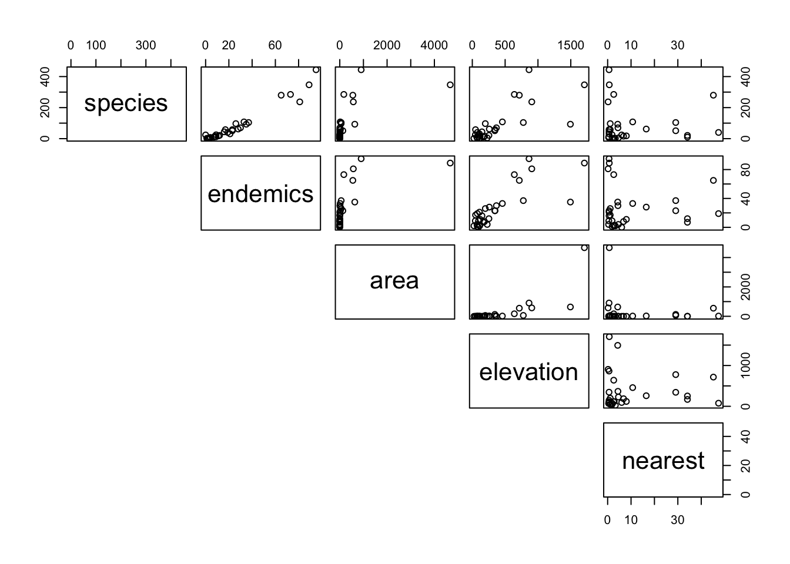
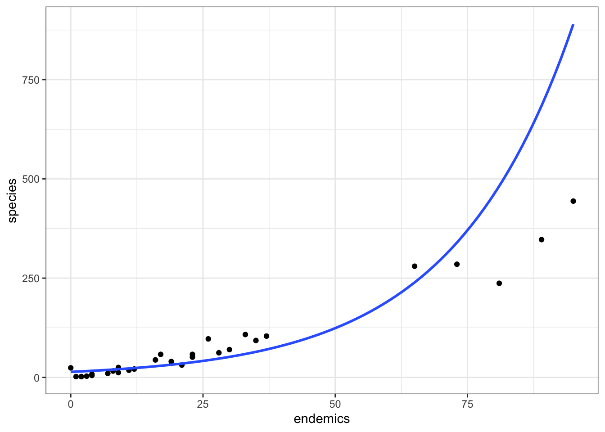
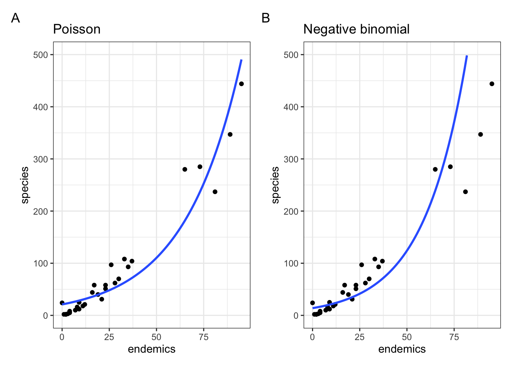

library(MASS)
library(performance)
library(tidyverse)13 Overdispersion
Learning outcomes
Questions
- What is overdispersion and why is it important?
- How do we deal with overdispersion?
Objectives
- Be able to recognise overdispersion.
- Be able to perform a negative binomial regression on count data.
- Understand the difference between it and Poisson regression.
- Evaluate and interpret suitability of the model.
13.1 Libraries and functions
Click to expand
13.1.1 Libraries
13.1.2 Functions
# fits a negative binomial model
MASS::glm.nb()
# checks for overdispersion
performance::check_overdispersion()13.1.3 Libraries
# A maths library
import math
# A Python data analysis and manipulation tool
import pandas as pd
# Python equivalent of `ggplot2`
from plotnine import *
# Statistical models, conducting tests and statistical data exploration
import statsmodels.api as sm
# Convenience interface for specifying models using formula strings and DataFrames
import statsmodels.formula.api as smf
# Needed for additional probability functionality
from scipy.stats import *13.1.4 Functions
In the previous chapter we looked at how to analyse count data. We used a Poisson regression to do this. A key assumption in a Poisson regression is that the mean of the count data is equal to the variance.
That’s great - until the observed variance isn’t equal to the mean. If, instead, the observed variance in your data exceeds the mean of the counts we have overdispersion. Similarly, if it’s lower we have underdispersion.
Queue negative binomial models.
Negative binomial models are also used for count data, but these models don’t require that the variance of the data exactly matches the mean of the data, and so they can be used in situations where your data exhibit overdispersion.
We’ll explore this with the galapagos example. You can find the data in:
data/galapagos.csv
There are 30 Galapagos islands and 4 variables in the data. The relationship between the number of plant species (species) and several geographic variables is of interest.
endemics– the number of endemic speciesarea– the area of the island km2elevation– the highest elevation of the island (m).nearest– the distance from the nearest island (km)
13.2 Load and visualise the data
First we load the data, then we visualise it.
galapagos <- read_csv("data/galapagos.csv")Let’s have a glimpse at the data:
galapagos# A tibble: 30 × 5
species endemics area elevation nearest
<dbl> <dbl> <dbl> <dbl> <dbl>
1 58 23 25.1 346 0.6
2 31 21 1.24 109 0.6
3 3 3 0.21 114 2.8
4 25 9 0.1 46 1.9
5 2 1 0.05 77 1.9
6 18 11 0.34 119 8
7 24 0 0.08 93 6
8 10 7 2.33 168 34.1
9 8 4 0.03 71 0.4
10 2 2 0.18 112 2.6
# ℹ 20 more rowsgalapagos_py = pd.read_csv("data/galapagos.csv")Let’s have a glimpse at the data:
galapagos_py.head() species endemics area elevation nearest
0 58 23 25.09 346 0.6
1 31 21 1.24 109 0.6
2 3 3 0.21 114 2.8
3 25 9 0.10 46 1.9
4 2 1 0.05 77 1.9We can plot the data:
galapagos %>%
pairs(lower.panel = NULL)
It looks as though endemics and elevation might be related to species, but area and nearest are harder to work out.
Given that the response variable, species, is a count variable we try to construct a Poisson regression. We decide that there is no biological reason to look for interaction between the various predictor variables and so we don’t construct a model with any interactions. Remember that this may or may not be a sensible thing to do in general.
13.3 Constructing a model
glm_gal <- glm(species ~ area + endemics + elevation + nearest,
data = galapagos, family = "poisson")and we look at the model summary:
summary(glm_gal)
Call:
glm(formula = species ~ area + endemics + elevation + nearest,
family = "poisson", data = galapagos)
Coefficients:
Estimate Std. Error z value Pr(>|z|)
(Intercept) 2.794e+00 5.332e-02 52.399 < 2e-16 ***
area -1.266e-04 2.559e-05 -4.947 7.53e-07 ***
endemics 3.325e-02 9.164e-04 36.283 < 2e-16 ***
elevation 3.799e-04 9.432e-05 4.028 5.63e-05 ***
nearest 9.049e-03 1.327e-03 6.819 9.18e-12 ***
---
Signif. codes: 0 '***' 0.001 '**' 0.01 '*' 0.05 '.' 0.1 ' ' 1
(Dispersion parameter for poisson family taken to be 1)
Null deviance: 3510.73 on 29 degrees of freedom
Residual deviance: 315.88 on 25 degrees of freedom
AIC: 486.71
Number of Fisher Scoring iterations: 5Now, this time, before we start looking at interpreting the model coefficients were going to jump straight into assessing whether the model is well-specified (spoiler alert: we do this because I already know that it isn’t…).
We can formally check this with our trusty “Is the model well-posed” probability value:
1 - pchisq(315.88, 25)[1] 0This gives a big fat 0, so no, there are definitely things wrong with our model and we can’t really trust anything that’s being spat out at this stage. The issue in this case lies with overdispersion.
Dispersion parameter
One way of assessing dispersion is by calculating the dispersion parameter, \(\theta\). This takes the residual deviance and divides it by the number of degrees of freedom.
The residual deviance is 315.88, but we only have 25 degrees of freedom in the model. The number of degrees of freedom are low because we only have 30 data points but have 4 parameters in our model, leading to \(30 - 4 - 1 = 25\) degrees of freedom. So we have:
\[\theta = 315.88 / 25 = 12.64\]
The Poisson regression is assuming the value is 1. But the actual \(\theta\) is nowhere near close to 1, so that’s is a bad idea.
Other methods to calculate \(\theta\)
It wouldn’t be statistics if there weren’t multiple ways to assess the same thing!
We can use the check_overdispersion() function from the performance package. If we do this on our glm_gal model, we get the following:
check_overdispersion(glm_gal)# Overdispersion test
dispersion ratio = 11.910
Pearson's Chi-Squared = 297.747
p-value = < 0.001Overdispersion detected.You’ll notice that the dispersion parameter is slightly different from the one we calculated. That’s because it uses a slightly different method (see ?check_overdispersion if you’re really interested). It is, however, a nice quick-and-easy function to assess overdispersion.
So, with that conclusion, we won’t bother looking at the analysis of deviance table or asking whether the model is better than the null model. Instead we need to find a better fitting model…
For count response data options are limited, but the main alternative to a Poisson model is something called a negative binomial model.
13.4 Negative binomial model
To specify a negative binomial model, we use the MASS package.
library(MASS)nb_gal <- glm.nb(species ~ area + endemics + elevation + nearest,
data = galapagos)summary(nb_gal)
Call:
glm.nb(formula = species ~ area + endemics + elevation + nearest,
data = galapagos, init.theta = 2.987830946, link = log)
Coefficients:
Estimate Std. Error z value Pr(>|z|)
(Intercept) 2.4870922 0.1864426 13.340 < 2e-16 ***
area -0.0002911 0.0001941 -1.500 0.134
endemics 0.0457287 0.0065890 6.940 3.92e-12 ***
elevation 0.0003053 0.0005137 0.594 0.552
nearest 0.0040316 0.0079105 0.510 0.610
---
Signif. codes: 0 '***' 0.001 '**' 0.01 '*' 0.05 '.' 0.1 ' ' 1
(Dispersion parameter for Negative Binomial(2.9878) family taken to be 1)
Null deviance: 151.446 on 29 degrees of freedom
Residual deviance: 33.395 on 25 degrees of freedom
AIC: 286.06
Number of Fisher Scoring iterations: 1
Theta: 2.988
Std. Err.: 0.898
2 x log-likelihood: -274.060 This output is very similar to the other GLM outputs that we’ve seen but with some additional information at the bottom regarding the dispersion parameter that the negative binomial model has used, which it calls Theta (2.988). It is estimated from the data.
As before, the main numbers to extract from the output are the numbers underneath Estimate in the Coefficients table:
Coefficients:
Estimate
(Intercept) 2.4870922
area -0.0002911
endemics 0.0457287
elevation 0.0003053
nearest 0.0040316These are the coefficients of the Negative Binomial model equation and need to be placed in the following formula in order to estimate the expected number of species as a function of the other variables.:
\[ \begin{split} E(species) = \exp(2.49 - 0.0003 \times area + 0.046 \times endemics\\ + \ 0.0003 \times elevation + 0.004 \times nearest) \end{split} \]
Key concept
The main difference between a Poisson regression and a negative binomial regression: in the former the dispersion parameter is assumed to be 1, whereas in the latter it is estimated from the data.
As such, the negative binomial model has the same form for its line of best fit as the Poisson model, but the underlying probability distribution is different.
13.4.1 Assessing significance
We can ask the same three questions we asked before.
- Is the model well-specified?
- Is the overall model better than the null model?
- Are any of the individual predictors significant?
To assess whether the model is any good we’ll use the residual deviance and the residual degrees of freedom.
1 - pchisq(33.395, 25)[1] 0.1214851Instead of manually typing in the values, which is of course prone to errors, we can also extract them directly from the model object:
1 - pchisq(nb_gal$deviance, nb_gal$df.residual)[1] 0.1214756This gives a probability of 0.121. Whilst this isn’t brilliant, it is still much better than the model we had before, and now that we’ve taken account of the overdispersion issue, the fact that this probability is a bit small is probably down to the fact that the predictor variables we have in the model might not be enough to fully explain the number of species on each of the Galapagos islands.
However, since we don’t have any other data to play with there’s nothing we can do about that right now.
To assess if the overall model, with all four terms, is better than the null model we’ll look at the difference in deviances and the difference in degrees of freedom:
1 - pchisq(151.446 - 33.395, 29 - 25)[1] 0Or extracting them directly from the model object:
1 - pchisq(nb_gal$null.deviance - nb_gal$deviance,
nb_gal$df.null - nb_gal$df.residual)[1] 0This gives a reported p-value of 0, which is pretty darn small. So, yes, this model is better than nothing at all and at least some of our predictors are related to the response variable in a meaningful fashion.
Finally, we’ll construct an analysis of deviance table to look at the individual predictors:
anova(nb_gal, test = "Chisq")Warning in anova.negbin(nb_gal, test = "Chisq"): tests made without
re-estimating 'theta'Warning: glm.fit: algorithm did not convergeAnalysis of Deviance Table
Model: Negative Binomial(2.9878), link: log
Response: species
Terms added sequentially (first to last)
Df Deviance Resid. Df Resid. Dev Pr(>Chi)
NULL 29 151.446
area 1 33.873 28 117.574 5.884e-09 ***
endemics 1 83.453 27 34.121 < 2.2e-16 ***
elevation 1 0.468 26 33.653 0.4939
nearest 1 0.257 25 33.395 0.6121
---
Signif. codes: 0 '***' 0.001 '**' 0.01 '*' 0.05 '.' 0.1 ' ' 1You might get a warning message about theta not being recalculated but this isn’t something to worry about.
For more detail on the deviance table, refer to the chapter on Significance testing & goodness-of-fit.
We can now see that it looks like two of our predictor variables aren’t actually significant predictors at all, and that only the area and number of endemic species (endemics) on each island is a significant predictor of the number of plant species on each Galapagos island. We can check this further using backward stepwise elimination.
step(nb_gal)Start: AIC=284.06
species ~ area + endemics + elevation + nearest
Df Deviance AIC
- nearest 1 33.653 282.32
- elevation 1 33.831 282.50
<none> 33.395 284.06
- area 1 35.543 284.21
- endemics 1 70.764 319.43
Step: AIC=282.32
species ~ area + endemics + elevation
Df Deviance AIC
- elevation 1 33.814 280.78
<none> 33.351 282.32
- area 1 35.795 282.76
- endemics 1 70.183 317.15
Step: AIC=280.77
species ~ area + endemicsWarning: glm.fit: algorithm did not converge Df Deviance AIC
- area 1 35.179 280.72
<none> 33.232 280.77
- endemics 1 114.180 359.72
Step: AIC=280.66
species ~ endemics
Df Deviance AIC
<none> 33.204 280.66
- endemics 1 137.826 383.28
Call: glm.nb(formula = species ~ endemics, data = galapagos, init.theta = 2.695721184,
link = log)
Coefficients:
(Intercept) endemics
2.63124 0.04378
Degrees of Freedom: 29 Total (i.e. Null); 28 Residual
Null Deviance: 137.8
Residual Deviance: 33.2 AIC: 282.7This shows that only endemics is an appropriate predictor. See the Core statistics notes on Backwards stepwise elimination for more information.
Spot the difference
This minimal model is a bit surprising, because in the analysis of deviance table output the area variable was also highly significant. As such, we would have expected this variable to be retained during the BSE.
This is partly to do with the order in which the different terms are tested. In the analysis of deviance table there is a hint: Terms added sequentially (first to last). Our model is species ~ area + endemics + elevation + nearest and when the individual p-values are calculated, it makes comparisons between the different terms in a sequential order. Or, species ~ area + endemics + ... will not give the same results as species ~ endemics + area + .... We can check this:
m1 <- glm.nb(species ~ endemics + area + elevation + nearest, data = galapagos)
anova(m1, test = "Chisq")Warning in anova.negbin(m1, test = "Chisq"): tests made without re-estimating
'theta'Analysis of Deviance Table
Model: Negative Binomial(2.9878), link: log
Response: species
Terms added sequentially (first to last)
Df Deviance Resid. Df Resid. Dev Pr(>Chi)
NULL 29 151.446
endemics 1 115.325 28 36.122 <2e-16 ***
area 1 2.001 27 34.121 0.1572
elevation 1 0.468 26 33.653 0.4939
nearest 1 0.257 25 33.395 0.6121
---
Signif. codes: 0 '***' 0.001 '**' 0.01 '*' 0.05 '.' 0.1 ' ' 1If we order the predictor variables like this, the area variable no longer comes back as statistically significant.
In the significance testing section we go through this in more detail and show you how you can make individual comparisons.
Our new best model only contains endemics as a predictor, so we should fit this model and check that it still is an adequate model.
nb_gal_min <- glm.nb(species ~ endemics, data = galapagos)summary(nb_gal_min)
Call:
glm.nb(formula = species ~ endemics, data = galapagos, init.theta = 2.695721175,
link = log)
Coefficients:
Estimate Std. Error z value Pr(>|z|)
(Intercept) 2.631244 0.164242 16.02 <2e-16 ***
endemics 0.043785 0.004233 10.34 <2e-16 ***
---
Signif. codes: 0 '***' 0.001 '**' 0.01 '*' 0.05 '.' 0.1 ' ' 1
(Dispersion parameter for Negative Binomial(2.6957) family taken to be 1)
Null deviance: 137.826 on 29 degrees of freedom
Residual deviance: 33.204 on 28 degrees of freedom
AIC: 282.66
Number of Fisher Scoring iterations: 1
Theta: 2.696
Std. Err.: 0.789
2 x log-likelihood: -276.662 If we look at the deviance residuals (33.204) and the residual degrees of freedom (28), we can use the pchisq() function to get an overall assessment of whether this model is well-specified.
1 - pchisq(nb_gal_min$deviance, nb_gal_min$df.residual)[1] 0.2283267And we get a probability of 0.228 which is better than before, not amazing, but it might be adequate for what we have. Woohoo!
The model equation for a negative binomial curve is the same as for a Poisson model and so, lifting the coefficients from the summary output we have the following relationship in our model:
\[E(species) = \exp(2.63 + 0.044 \times endemics)\]
13.4.2 Model suitability
As we saw above, the model we created was not terribly well-specified. We can visualise it as follows:
ggplot(galapagos, aes(endemics, species)) +
geom_point() +
geom_smooth(method = "glm.nb", se = FALSE, fullrange = TRUE)
species ~ endemics
We can see that at the lower range of endemics, the model is predicting values that are a bit too high. In the mid-range it predicts values that are too low and at the higher end the model is, well, rubbish.
Let’s compare it directly to our original Poisson regression (setting the limits of the y-axes to match):

Show code
p1 <- ggplot(galapagos, aes(endemics, species)) +
geom_point() +
geom_smooth(method = "glm", se = FALSE, fullrange = TRUE,
method.args = list(family = poisson)) +
ylim(0, 500) +
labs(title = "Poisson")
p2 <- ggplot(galapagos, aes(endemics, species)) +
geom_point() +
geom_smooth(method = "glm.nb", se = FALSE, fullrange = TRUE) +
ylim(0, 500) +
labs(title = "Negative binomial")So, Figure 13.2 shows that, although we’ve dealt with the overdispersion we had in the original Poisson regression, we still have a pretty poor fitting model. So, what is a sad researcher to do? We’ll let you explore this in an exercise.
Important
Complete Exercise 13.5.1.
13.5 Exercises
13.5.1 Galapagos models
13.6 Summary
Key points
- Negative binomial regression relaxes the assumption made by Poisson regressions that the variance is equal to the mean.
- In a negative binomial regression the dispersion parameter \(\theta\) is estimated from the data, whereas in a regular Poisson regression it is assumed to be \(1\).